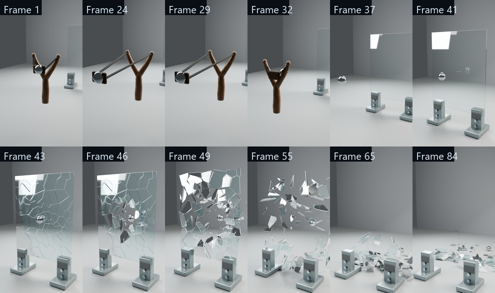

V6 — 새총부터 유리 파손까지 품질 비교
왼쪽은 V5의 단일 유리판 시험이고, 오른쪽은 이번에 제작한 3.5초 연속 장면입니다. V6는 구슬 당김·발사·카메라 추적과 파편의 단계별 이동을 한 장면으로 제작했습니다. 실사 촬영이나 정밀 파괴 실험은 아닙니다.
영상을 불러오는 중입니다.
V6 장면 흐름

작업 범위는 품질 확인용 유리판 한 장입니다. 기존 유리판 20장 영상은 V4에 그대로 보존되어 있습니다.
왼쪽은 V5의 단일 유리판 시험이고, 오른쪽은 이번에 제작한 3.5초 연속 장면입니다. V6는 구슬 당김·발사·카메라 추적과 파편의 단계별 이동을 한 장면으로 제작했습니다. 실사 촬영이나 정밀 파괴 실험은 아닙니다.

작업 범위는 품질 확인용 유리판 한 장입니다. 기존 유리판 20장 영상은 V4에 그대로 보존되어 있습니다.